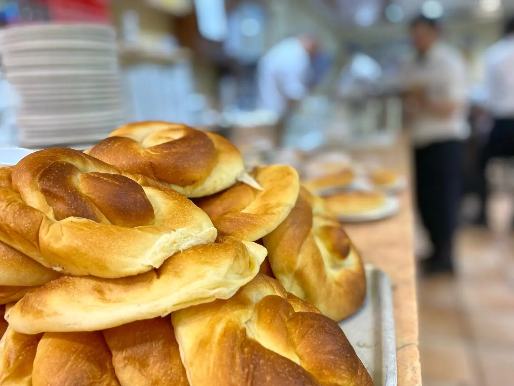

Espirales doradas, esponjosas, recién horneadas.
La masa se trabaja a mano, se enrosca en espiral y se hornea hasta quedar dorada por fuera y tierna por dentro. Se pueden comer solas, con chocolate, o mojándolas lentamente en un suizo con nata hasta que el olor del horno se mezcla con el del cacao.

La ensaimada es una de las grandes contribuciones mallorquinas a la repostería del Mediterráneo. El nombre viene del «saïm», la manteca de cerdo que le da a la masa su textura característica. En Barcelona se adoptaron rápidamente: la granja y la pastelería las incorporaron a sus menús en el siglo XIX, y desde entonces forman parte del ritual del desayuno y la merienda.